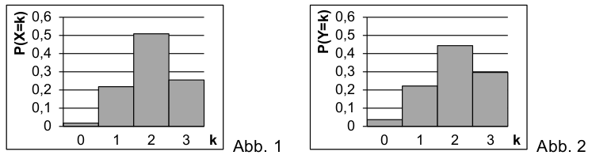

Bayerisches Abitur in Mathematik 2013¶
Aufgabe
Nach der Wahl darf die Partei A in einem Ausschuss drei Sitze besetzen. Von den acht Stadträtinnen und vier Stadträten der Partei A, die Interesse an einem Sitz in diesem Ausschuss äußern, werden drei Personen per Losentscheid als Ausschussmitglieder bestimmt.
Die Zufallsgröße \(X\) beschreibt die Anzahl der weiblichen Ausschussmitglieder der Partei A. Abbildung 1 zeigt die Wahrscheinlichkeitsverteilung der Zufallsgröße \(X\) mit \(P(X=0) = \frac{1}{55}\) und \(P(X=3) = \frac{14}{55}\).
Berechnen Sie die Wahrscheinlichkeit \(P(X=1)\) und \(P(X=2)\).
(Ergebnis: \(P(X=1)=\frac{12}{55}, P(X=2)=\frac{28}{55}\))
Bestimmen Sie Erwartungswert und Varianz der Zufallsgröße \(X\).
(Ergebnis: \(E(X)=2, \mathrm{Var}(X)=\frac{6}{11}\))
Abbildung 2 zeigt die Wahrscheinlichkeitsverteilung einer binomialverteilten Zufallsgröße \(Y\) mit den Parametern \(n=3\) und \(p=\frac{2}{3}\). Zeigen Sie rechnerisch, dass \(Y\) den gleichen Erwartungswert wie die Zufallsgröße \(X\), aber eine größere Varianz als \(X\) besitzt. Erläutern Sie, woran man durch Vergleich der Abbildungen 1 und 2 erkennen kann, dass \(\mathrm{Var}(Y)>\mathrm{Var}(X)\) gilt.
Lösung zu Teil a
Das Losverfahren entspricht dem Ziehen aus einer Urne ohne Zurücklegen. Dafür ergibt sich eine hypergeometrische Verteilung. Mit der Zahl der Stadträtinnen (\(w=8\)) und der Stadträte (\(m=4\)) erhält man bei \(N=3\) Ausschussmitgliedern
Einsetzen liefert
Da die Summe der Wahrscheinlichkeiten gleich Eins sein muss, ergibt sich mit den anderen angegebenen Wahrscheinlichkeiten ferner
Die Wahrscheinlichkeiten können auch leicht mit Hilfe von Sage berechnet werden.
Lösung zu Teil b
Der Erwartungswert zu einer Verteilung berechnet sich allgemein mit der Formel
Die Varianz ist dann durch
mit
gegeben. Mit den Wahrscheinlichkeiten aus der ersten Teilaufgabe erhält man
und damit
Mit Sage können wir diese Werte ebenfalls leicht bestimmen.
Lösung zu Teil c
Mit der gegebenen binomialen Wahrscheinlichkeitsverteilung
können wir mit Hilfe von Sage den Erwartungswert sowie die Varianz bestimmen.
Natürlich kann man diese Ergebnisse auch durch explizite Rechnung analog zur vorigen Teilaufgabe erhalten, wenn man zunächst die Wahrscheinlichkeiten bestimmt.
Vergleicht man die Ergebnisse mit der Teilaufgabe b, so sieht man, dass der Erwartungswert gleich ist, die Varianz jedoch größer.
Aus den Abbildungen lässt sich dies bereits schließen, da die Wahrscheinlichkeit für \(Y\) bei \(k=2\) kleiner und bei \(k=0\) und \(k=3\) hingegen deutlich größer ist als für \(X\). Die Wahrscheinlichkeitsverteilung für \(Y\) ist also „breiter“ und besitzt somit eine größere Varianz.